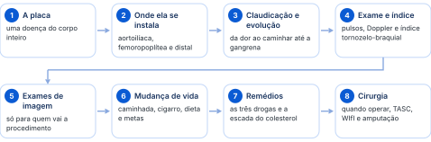
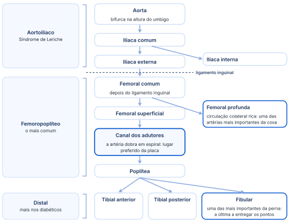
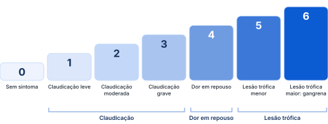
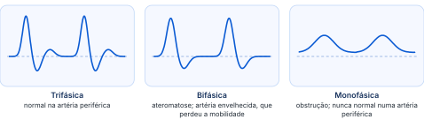
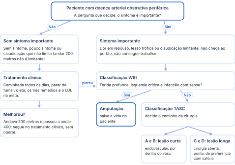

Da claudicação à gangrena: como reconhecer, classificar e tratar a placa nas artérias das pernas, e quando operar.
Organizada a partir da aula do Dr. Toregeani, com a linguagem ajustada para estudo. A legenda de cores está na página 2.
“No final das contas, o que sobra é você, o seu trabalho, a sua família e os seus amigos. Então, não desanimem.”

A gordura do sangue vai se depositando dentro das artérias e forma placas. Nas pernas, a placa estreita o caminho do sangue, e o músculo sofre quando trabalha. A mesma placa está no coração e no cérebro: quem tem a doença nas pernas tem risco no corpo inteiro.
Toda queixa em angiologia se encaixa em um de três grupos: arterial, venoso ou linfático. Esta aula é da insuficiência arterial, e o que separa a forma crônica da aguda é o tempo: a aguda se instala em dias ou semanas; a crônica, que é a doença arterial obstrutiva periférica, em meses a anos. A oclusão arterial aguda fica para outra aula.
A aterosclerose faz parte das doenças cardiovasculares, a primeira causa de morte no mundo e no Brasil. O câncer vem em segundo lugar e, dependendo do país, o trauma em terceiro. As doenças cardiovasculares se dividem em insuficiência coronariana, acidente vascular cerebral, estenose da carótida e doença arterial obstrutiva periférica, que pode chegar a 20% da população.
Por ser muito sintomática, a doença tem relatos desde a Antiguidade. Na época de Hipócrates já havia bastante informação anatômica; depois veio um intervalo de quase mil anos em que não se podia estudar o corpo humano, e quem dissecava fugia para países de leis mais brandas, sem poder publicar, sob risco de prisão ou de fogueira por heresia. O estudo voltou a partir de 1500, mas a microcirculação só foi entendida com o microscópio. Na era moderna, o Estudo de Framingham acompanhou pessoas por anos e mostrou como a dieta e os hábitos encurtam ou alongam a vida, abrindo caminho para entender a dislipidemia e a formação da placa.
Na idade de quem está na faculdade, muitos já formam as primeiras estrias lipoídicas: pequenas plaquinhas de gordura dentro dos vasos. Conforme o estilo de vida, elas evoluem de dois jeitos:
Nas aulas práticas de ultrassom, a medida do espessamento da carótida de alguns alunos da turma deu, na maioria, acima da média. O estudante que leva a sério a faculdade costuma ter um estilo de vida ruim, sem tempo para exercício nem para comer bem; se não mudar alguns hábitos, desenvolve a doença aterosclerótica mais jovem.
“O médico, com seus estresses e seus incômodos, costuma morrer mais cedo do que a média. Isso é um fato triste e é a mais pura verdade. Talvez a geração de vocês possa mudar isso.”
A formação da placa é um mecanismo complexo, com três elementos principais: as gorduras de baixa densidade (o colesterol LDL, sigla em inglês de lipoproteína de baixa densidade, como aparece no exame de sangue), as apolipoproteínas, com destaque para a lipoproteína(a), e os triglicerídeos. Hoje se fala muito pouco do colesterol bom, o HDL: o foco está no LDL, na lipoproteína(a) e nos triglicerídeos. Sobre esse fundo agem os fatores que agravam a doença, como o cigarro, o diabetes, a alteração renal e a dieta, tratados no capítulo 06.
A placa tem lugares preferidos, e o lugar decide o sintoma. O que define se o paciente sente ou não é a circulação colateral: os caminhos alternativos que o sangue abre em volta da obstrução.
A aorta se bifurca na altura do umbigo nas artérias ilíacas comuns, que se dividem em ilíaca interna e externa. Passado o ligamento inguinal, a ilíaca externa vira femoral comum, que se divide em femoral profunda e femoral superficial. A superficial atravessa o canal dos adutores e vira poplítea, que se divide nas três artérias da perna: tibial anterior, tibial posterior e fibular.

É a oclusão aortoilíaca, com a tríade clássica: impotência sexual, claudicação alta e falta de pulsos. Dá muito sintoma porque há pouca colateral entre a parte de cima e a de baixo da aorta: basicamente as artérias epigástricas, intercostais e lombares, que são muito finas.
A tríade aparece praticamente em homens, porque sem boa perfusão o homem não consegue ter a relação. Na mulher, um eventual efeito da má circulação na vulva e na vagina não impede o ato sexual, e nenhuma paciente procurou o Dr. Toregeani com essa queixa. Já homens que procuram o vascular por impotência, achando que é má circulação, são muitos.
As placas costumam se instalar nas bifurcações, como a da carótida e a da aorta. Na bifurcação femoral elas até se instalam, mas a preferência é o canal dos adutores. Ali, quando o joelho dobra, a artéria não faz um ângulo reto: ela torce em espiral, como uma sanfoninha. Um stent colocado nesse ponto vira uma molinha dobrada o tempo todo e, em cerca de um ano, quebra. Por isso o segmento femoropoplíteo é o ponto onde a doença mais se instala, e é um lugar ruim de tratar.
Para mostrar, o Dr. Toregeani pediu a um aluno que dobrasse um fio, a alça de uma bolsa, como quem dobra o joelho. O fio não forma um ângulo de 90 graus: faz uma espiral e não fica alinhado. É o que acontece com as artérias que passam pelas articulações.
O paciente acorda sem dor, começa a caminhar, a panturrilha aperta, ele para e a dor passa. Com o tempo, dói mesmo parado, aparecem feridas e, no fim, gangrena. Quem chega a esse ponto também morre mais cedo de outras causas.
Dor para caminhar, dor nas costas e dor nas pernas todo mundo tem: de ter dormido mal, de ter ficado muito tempo sentado. A dor da claudicação precisa ter estas características:
Sem essas características, muito provavelmente não se trata de doença arterial obstrutiva periférica.
Sem sintoma não quer dizer sem doença. A claudicação evidente não é a maioria: há muitos pacientes com a femoral ocluída e sem sintoma nenhum. É o avô que vai de carro até a praça para jogar dominó, depois ao mercado: caminha 20, 50 metros de cada vez e nunca chega à distância que faria doer. Talvez tivesse sintoma se fizesse exercício.
A doença começa com a claudicação e termina com a gangrena. No meio do caminho: claudicação leve, moderada e grave, dor em repouso, lesão trófica menor e lesão trófica maior, que é a gangrena. A classificação mais antiga é a de Fontaine, de 1 a 4. Hoje se usa mais a de Rutherford, de 0 a 6, que lembra a CEAP: o zero não tem nada e o seis tem tudo.

“Começa com a claudicação, termina com a gangrena. Esse é o caminho final.”
Na doença grave, o paciente passa a ter dor em repouso e dorme com o pé para fora da cama, pendurado. A gravidade faz o sangue descer e, no início, alivia um pouco. Com os dias vira um ciclo vicioso: a perna parada para baixo acumula líquido e incha, como a de quem viaja de ônibus até São Paulo. O inchaço aumenta a distância entre a célula e o vaso e piora a nutrição; quanto pior, mais ele deixa o pé para baixo. O resultado costuma ser evolução rápida para gangrena.
O pé inchado engana. O médico pensa em doença venosa, mas o inchaço é só postural: um mecanismo de defesa para tentar melhorar a circulação.
São pacientes que morrem de outras coisas, porque a placa está no corpo todo. É importante contar isso ao paciente: pode ser o que o ajuda a se cuidar. O problema é que, quando a dor melhora com o tratamento, ele se acha curado e volta a fazer tudo errado.
Uma senhora de 79 anos, obesa mórbida, que não se cuida, é acompanhada pelo Dr. Toregeani desde 2009. Pelas curvas, tinha 60% de chance de ter morrido até 2019. Em 2020 e 2021 entrou na isquemia crítica e, desde então, passou por sete procedimentos, ainda com as duas pernas. Em setembro de 2026 internou de novo com a perna azul e o pé literalmente apodrecendo; a filha tentou aquecer o pé com uma bolsa de água quente e queimou toda a panturrilha. Agora, além da isquemia crítica, ela tem necrose da parte de trás da perna e do calcanhar.
Bolsa de água quente no pé isquêmico. No caso acima, o calor queimou toda a panturrilha e somou uma necrose à isquemia.
“Infelizmente, muitos médicos olham só a partir daquele momento para uma perna, mas é uma doença sistêmica. O certo é olhar para tudo.”
O diagnóstico se faz com a conversa e o exame físico: palpar os pulsos, ouvir a onda com o Doppler portátil e comparar a pressão do tornozelo com a do braço. Exame de imagem fica para quem vai ser operado.
Um dado muito importante do exame físico é palpar os pulsos e anotá-los em cruzes, de 1 a 4; zero é ausente. Hoje os prontuários digitais trazem um quadro com os lados direito e esquerdo (antes se desenhava um bonequinho e se escrevia o número em cada pulso). Ler o quadro é traduzir a circulação: o primeiro pulso que some mostra onde está a oclusão.
Nem sempre se consegue palpar os pulsos como se deveria. Por isso o Doppler portátil vai sempre junto.
Com o Doppler portátil se ouve a característica da onda. A onda arterial periférica normal é trifásica. Perdeu as três fases, atenção: a bifásica é muito comum em quem tem ateromatose ou arteriosclerose, a artéria envelhecida que perdeu a mobilidade; a monofásica é muito comum em quem tem obstrução.

Numa artéria periférica, como a femoral, o fluxo monofásico nunca deve aparecer. Na carótida e na artéria renal ele é o normal; a regra vale para as artérias periféricas e para as artérias viscerais em jejum.
A anamnese e o exame físico são básicos e suficientes para o diagnóstico. No máximo se usa o índice tornozelo-braquial, visto em propedêutica, que permite graduar a doença:
Abaixo de 0,4 aparecem as lesões tróficas; chegando a esse nível, o paciente possivelmente evolui para gangrena em alguns dias.
Muitos desses pacientes recebem ainda a classificação WIfI, hoje popular no mundo todo, porém mais complexa e mais pesada para quem está aprendendo. Não é a senha da internet: o nome vem das iniciais em inglês dos três itens que ela soma.
A pontuação orienta a decisão: tratamento clínico ou cirurgia e, se for cirurgia, endovascular ou aberta. O uso na prática está no capítulo 08.
Exame de imagem não serve para fazer o diagnóstico: serve para planejar o procedimento de quem vai ser operado. Quem fica no tratamento clínico faz, no máximo, um eco-Doppler colorido.
Só com a anamnese e o exame físico já se sabe, mais ou menos, onde está o problema. O exame de imagem entra quando o paciente está grave e vai precisar de procedimento. Para quem tem só a doença clínica, no máximo um eco-Doppler colorido. O caminho, quando há procedimento:
Ajuda principalmente em duas coisas: ver onde há fluxo bom e onde haverá deságue (a artéria que recebe o sangue) se a intenção for uma ponte, e ver se há uma safena disponível.
No sistema arterial periférico, aumento da velocidade do sangue no ponto da placa.
Placa no ultrassom não é indicação de cirurgia. Achar uma placa no trajeto femoropoplíteo não significa operar: a decisão depende da sintomatologia.
A mesma senhora de 79 anos estava indo para amputação, e o Dr. Toregeani já tinha conversado com a família. Com um ultrassom no pronto-socorro, resolveu procurar uma veia e achou 25 cm de veia na coxa direita. Com ela fez uma ponte da virilha esquerda, que ainda tinha perfusão, para a femoral superficial direita, fugindo da virilha direita, comprometida por infecção. O ultrassom salvou a perna naquela situação.
Se o caso vai para intervenção, é preciso o exame padrão-ouro para decidir: a angiografia, que continua fundamental, principalmente nas cirurgias endovasculares. Se o Doppler já basta, a angiografia é feita na própria sala, antes de começar.
Nas angiografias mostradas em aula aparecem: a femoral superficial obstruída; uma placa na origem, na bifurcação da femoral; lesões importantes no canal dos adutores, sem oclusão; e um caso mais grave, sem nenhuma artéria com fluxo troncular (o sangue que chega cheio, normal, até o vaso): tibial posterior ocluída, só com colaterais, tibial anterior ocluída que se reenche mais embaixo e a fibular, toda doente, levando sangue para a perna.
Paciente com oclusão da femoral superficial, oligossintomático, que de repente começou a ter necrose do quinto dedo. Foi preciso intervir, e a artéria foi recanalizada com um dispositivo novo.
A base do tratamento não é a cirurgia: é caminhar todos os dias, parar de fumar, comer melhor e baixar o colesterol até a meta. Quem claudica começa sempre por aqui.
Os claudicantes vão para o tratamento clínico, apoiado em três pilares: mudança do estilo de vida, controle rigoroso da dislipidemia e exercício físico. Para o paciente inoperável (sem opção de ponte, com amputação como única saída) existem manejos de exceção, como vasodilatador injetável e câmara hiperbárica; não são o padrão.
Parece contraditório: o paciente reclama de dor para caminhar e recebe mais caminhada. É exatamente essa a ideia. O esforço obriga o músculo a trabalhar mais com menos, adaptando-se ao fluxo reduzido (e ele se adapta, de forma impressionante), e estimula novas circulações colaterais. Caminhada é fundamental.
Se uma hora e meia seguida parecer muito, pode ser meia hora de manhã, meia à tarde e meia à noite.
Há o jeito sarcástico (“Vai economizar, vô: agora só vai precisar comprar um pé de sapato”) e o consciente (“O senhor vai ficar sem a perna; como vai dançar no baile?”). Com o fumante é preciso pegar pesado, porque ele aprendeu a mentir desde cedo. Em Cascavel, uma fisioterapeuta da Universidade Estadual do Oeste do Paraná põe esses pacientes na esteira; mesmo assim, a maioria não faz o exercício.
Parar de fumar é fundamental: o Dr. Toregeani atendeu muita gente que perdeu perna ou braço por causa do cigarro. Hoje se vê menos gente fumando e mais gente usando vape, o cigarro eletrônico; se ele terá a mesma relação com a doença, só se saberá daqui a alguns anos.
Nos anos 1980 e 1990 não havia lei contra o cigarro, e as marcas patrocinavam os ídolos. Ayrton Senna começou na Toleman, de patrocínios modestos; foi para a Lotus preta da John Player Special, que depois ficou amarela com a Camel; e teve o sucesso verdadeiro na McLaren da Marlboro. Nos anos 1990 os governos perceberam que gastavam com saúde muito mais do que arrecadavam com o imposto do cigarro, mesmo com 150% de imposto na carteira, e começou a política de reduzir o consumo: a Fórmula 1 foi a primeira a proibir as marcas nos carros. Hoje o lugar daquelas propagandas é das bebidas energéticas.
Quem tem doença arterial obstrutiva periférica já entra como alto ou muito alto risco cardiovascular, porque já tem obstrução. O mesmo vale para a doença da carótida: a placa que causa estenose importante eleva o risco. Quanto mais problemas o paciente soma (diabetes, alteração renal), maior a chance de ser muito alto risco. O controle rigoroso do colesterol veio da cardiologia e tem o nível máximo de recomendação: com esses pacientes é preciso pegar pesado.
“Meu amigo, todo órgão tem um vaso sanguíneo. Todo órgão tem a chance de ter problema circulatório.”
Cortar a gordura visível da carne tira só 10% a 20% do problema, porque a carne em si já é gorda. O que funciona é mudar o preparo, escolher um corte menos gorduroso (que é menos saboroso) ou trocar a proteína, por alguns tipos de peixe e de legumes.
Para o paciente com triglicerídeo e LDL altos, o detalhe que faz o bom médico: para baixar os triglicerídeos, o ômega-3 dos peixes de água salgada; para o LDL, as gorduras de origem vegetal, como castanhas e outras oleaginosas, cereais e óleos insaturados e poli-insaturados. A maioria só pensa em tirar a picanha.
Obesidade não é sinônimo de dislipidemia. Há muito magro dislipidêmico e obeso de artérias limpas: além da dieta, pesa a genética. Há paciente que faz tudo certo e tem colesterol alto, cheio de placa, e paciente que faz tudo errado e não tem placa nenhuma.
Hoje são três remédios: ácido acetilsalicílico, estatina de alta potência e rivaroxabana em dose baixa. Se a estatina sozinha não leva o LDL à meta, soma-se a ezetimiba e, depois, um remédio injetável.
A tríade clássica era ácido acetilsalicílico (porque, se a placa fissurar, forma trombo), estatina e um vasodilatador, o cilostazol, que aumenta a distância caminhada. A partir do consenso de 2017, estudos mostraram que trocar o cilostazol pela rivaroxabana em dose baixa trazia mais benefício na mortalidade, e esses pacientes morrem mais do que a média. Dar as quatro drogas juntas aumentava o sangramento sem aumentar o benefício, e o cilostazol saiu.
Anticoagulante em dose baixa, a terceira droga desde 2017.
“Se você escrever na prova que o tratamento clínico é ácido acetilsalicílico, estatina e cilostazol, não está errado. Mas, pelo guideline, tem que ser ácido acetilsalicílico, estatina e rivaroxabana, que não é vasodilatador: é um anticoagulante.”
Das estatinas, a sinvastatina é a que existe no Sistema Único de Saúde. As de alta potência mais usadas são a rosuvastatina e a atorvastatina.
Rivaroxabana não é vasodilatador: é anticoagulante. E não se soma ao cilostazol: as quatro drogas juntas só aumentam o sangramento.
No tempo de estudante do Dr. Toregeani, esses pacientes eram tratados com ácido acetilsalicílico e pentoxifilina, um agente hemorreológico que aumenta a maleabilidade das hemácias. Tinha mais efeito colateral do que efeito na circulação, mas era o que havia. Por volta de 2005 chegou o cilostazol, e os pacientes passaram a caminhar mais; ainda se usa.
A estatina age no fígado: inibe uma enzima e a produção própria de colesterol cai. Bloqueado, o fígado passa a captar de fora o LDL que circula no sangue. Inibir essa enzima pode trazer efeitos no fígado e no músculo: o maior problema é a dor muscular; pode haver necrose muscular e, eventualmente, hepatopatia.
Quando o médico troca uma estatina por outra (por exemplo, tira a rosuvastatina por dor muscular), está trocando o citocromo que metaboliza o remédio, para ver se o paciente se dá melhor com o outro.
Opera-se quem tem sintoma importante (dor em repouso, ferida ou claudicação que impede a vida), não quem só tem a placa. Lesão curta se trata por dentro do vaso; lesão longa, com uma ponte. Perna isquêmica e infectada, com sepse, vai para amputação, que salva a vida.
Paciente com oclusão, mas assintomático ou oligossintomático, recebe tratamento clínico. E o sintoma tem de ser importante: na prática, operam-se os pacientes com dor em repouso ou lesão trófica. A claudicação limitante também pode indicar: é a do paciente que não consegue ir ao banheiro nem ao portão de casa. Há ainda o limitante funcional, como o carteiro que não consegue mais trabalhar.
Claudicar aos 200 metros não é claudicação limitante: é importante, mas não limitante. Há médico que aumenta a doença do paciente para indicar cirurgia; não se deixe enganar.
Com estatina na dose máxima e LDL abaixo de 50, se o paciente que andava 200 metros passa a andar 400, não se opera: segue o tratamento clínico. Se aparece um dedo necrótico, parte-se para a cirurgia.

Saindo do tratamento clínico, a classificação TASC (sigla em inglês do Consenso Intersociedades Transatlântico) indica o procedimento. Ela vai de A a D, tanto para a doença aortoilíaca quanto para a femoropoplítea:
“Endo, lesão curta, TASC A e B; aberta, lesão longa. Isso é o que vocês precisam saber. O resto é coisa mais para profissional da área.”
A classificação WIfI também pesa na indicação. Ferida profunda, isquemia crítica e infecção sistêmica: o paciente está em sepse, com uma perna isquêmica e infectada. A conduta é amputar. Nem sempre a melhor conduta é salvar a perna; é preciso bom senso. Os guidelines existem para normatizar: com tantas opções, cada um faria o que achasse certo.
“A amputação remete a um erro médico. Mas amputação pode curar uma pessoa, pode salvar.”
“Melhor morrer do que perder a perna.” O paciente que diz isso não tem consciência do que está pedindo. Tentar salvar a perna com WIfI altíssimo e sepse custa a vida do paciente.
Para uma ponte, o melhor enxerto é a safena, sempre que possível. Na aorta, a safena não serve: o melhor é a prótese de Dacron, a que a turma segurou na aula prática, como na ponte aortobifemoral.
“Cada caso é um caso. Você vai ter alguns padrões, mas a maioria dos pacientes você vai precisar individualizar.”
A cirurgia endovascular começou para pacientes de alto risco cirúrgico e acabou tomando conta. Hoje a estratégia é tentar a endovascular primeiro, por ser minimamente invasiva, mesmo fora de TASC A e B: o caso publicado pelo Hospital São Lucas era uma oclusão de 20 cm, TASC D. Se não der certo, a segunda opção é a ponte.
O segmento difícil para a endovascular é o femoropoplíteo; na verdade, a femoral superficial no canal dos adutores. Houve uma época de stent ali, mas o stent fratura e oclui a artéria. Hoje se usa muito a aterectomia (um dispositivo que arrebenta a placa) seguida do balão farmacológico com paclitaxel, um imunossupressor que impede o crescimento endotelial, a resposta inflamatória do vaso. Foi o que se fez no caso publicado.
A tecnologia evolui rápido: dispositivos e laser de aterectomia e o Shockwave, que quebra a placa com ondas sonoras. Enquanto o robô avança nas cirurgias urológicas e do câncer, na vascular quem avança é a endovascular. A sequência na sala: tenta a endovascular; não deu, vai para a aberta; não deu, gangrena e amputação, que salva a vida, como no paciente com WIfI máximo: isquêmico, com ferida extensa e infecção com sepse.
Síndrome de Leriche: oclusão aortoilíaca com impotência, claudicação alta e falta de pulsos; praticamente em homens.
Canal dos adutores: a femoral superficial é o lugar mais comum, porque a artéria dobra em espiral; stent ali quebra.
Claudicação: acorda sem dor, dói na panturrilha ao caminhar, para e passa. Sem isso, não é a doença.
Prognóstico: com claudicação, 40% vivos em 10 anos; na forma severa, menos de 20%; na isquemia crítica, 45% vivos e com as duas pernas em 1 ano.
Pulsos de 0 a 4 cruzes: o primeiro pulso que some localiza a oclusão (femoral bom e poplíteo ausente: femoral superficial).
Onda do Doppler: trifásica é a normal; bifásica, ateromatose; monofásica, obstrução, nunca normal em artéria periférica.
Diagnóstico clínico: imagem só para quem vai a procedimento; na doença clínica, no máximo eco-Doppler colorido. Angiografia é o padrão-ouro.
Caminhada: uma hora e meia por dia, que pode ser dividida em três vezes de meia hora.
Metas de LDL: a doença já é alto ou muito alto risco; LDL abaixo de 70 no alto risco, abaixo de 50 no muito alto, abaixo de 40 na abordagem agressiva.
As três drogas: ácido acetilsalicílico, estatina de alta potência (rosuvastatina ou atorvastatina) e rivaroxabana 2,5 mg de 12 em 12 horas.
Escada do colesterol: mudança de vida e dieta, estatina, mais ezetimiba e, por fim, inibidores de PCSK9 injetáveis.
Quando operar: quando há sintoma, e importante: dor em repouso, lesão trófica ou claudicação limitante.
TASC: A e B, lesão curta, endovascular; C e D, lesão longa, cirurgia aberta com ponte.
WIfI máximo: ferida profunda, isquemia crítica e sepse levam à amputação, que salva a vida.
Enxerto: safena sempre que possível; na aorta, Dacron.